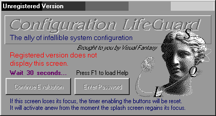
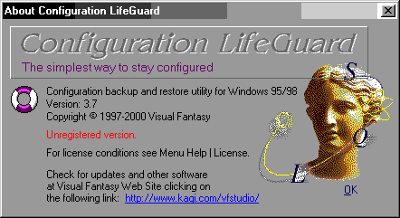

Life Guard version 3.7
La méthode et la protection sont identiques à celles d'ACDSee 3.0
Voyons si elle va confirmer le " How to Proceed... "
Après les modifications d'usages des caractéristiques, le Symbol Loader break sur l'Entry Point.
:004A4002 E872050000 CALL 004A4579 :004A4007 EB33 JMP 004A403C
Pour trouver rapidement le dernier passage de relais vers Life Guard, le plus simple, cette fois ci, va être
de chercher la signature du POPAD :
S 00400000 L 00500000 61 75 08
Comme précédemment, cette partie n'est pas compressée et donc lisible dès l'Entry Point
:
:004A44F3 61 POPAD :004A44F4 7508 JNZ 004A44FE :004A44F6 B801000000 MOV EAX,00000001 :004A44FB C20C00 RET 000C :004A44FE 6800000000 PUSH 00000000 -> va devenir PUSH 00462270 :004A4503 C3 RET
Un BPX 004A4503 va nous faire breaker à l'adresse qui nous permettra de réaliser notre Dump.
Au passage, vous penserez à relever l'adresse qu'ASPack aura Patché en 004A44FE -> 00462270
Réalisation du DUMP :
Ouverture de ProcDump
Sélection dans la fenêtre de la tache " Lifeguard "
Clic Droit sur Lifguard et " Dump Full "
Sauvegarde du Dump obtenu
Kill de LifeGuard
Sélection du bouton " PE Editor "
Ouverture du Dump
Modification de l'Entry Point
That's all
Le Dump fonctionne sans problème, et Wdasm le désassemble sans frémir.
Passons à l'étape suivante : le débuggage
Dans sa version Shareware, LifeGuard est équipé d'un écran d'accueil avec un Timer (géré
par GetTickCount) de 30 secondes.
C'est long trente secondes avant d'avoir le droit d'entrer un Password (champ unique) ou de pouvoir cliquer sur
" continuer évaluation ".

Comme il est hors de question de cracker ce programme (c'est POA Ben !), on va simplement en faciliter un peu la
découverte dans le plus pur esprit du respect Shareware :
Comme le nag de départ est orné d'un très joli UNREGISTERED VERSION,
il m'a semblé qu'il pourrait être intéressant de commencer par en rechercher la String Data
:
* Possible StringData Ref from Code 0bj ->"Unregistered version." I :00454394 mov edx, 004543E8 :00454399 cal1 0043A7FO
en remontant à la racine de ce call, vous aurez trois adresses d'appels :
* Referenced by a CALL at Addresses: |:0045357E , :00453E1C , :004575F7 I :00454334 mov eax, dword ptr [00464AD4] :00454339 cal1 00454064
Celle qui nous intéresse pour le moment est le branchement fait en 004575F7
:004575D2 mov eax, dword ptr [00464B10] :004575D7 call 00402CBO :004575DC test bl, bl :004575DE je 004575EC :004575EO mov eax, dword ptr [00463D48] :004575E5 mov eax, dword ptr [eax] :004575E7 call 0045413C * Referenced by a (U)nconditional or (C)onditiona1 Jump at Address: |:004575DE(C) I :004575EC test bl, bl :004575EE jne 004575FC :004575FO mov eax, dword ptr [00463D48] :004575F5 mov eax, dword ptr [eax] :004575F7 call 00454334 ; vers Unregistered
Deux sauts conditionnels se trouvent juste au-dessus, en 004575DC et 004575EE.
Celui qui va éviter l'affichage du nag est le second, mais si vous posez un BPX sur le premier, vous verrez
que c'est celui qui va déterminer l'état de BL, qui lui-même provoquera, ou non, le saut évitant
le call déplaisant.
La procédure en 00402CB0 est appelée par 221 Calls et deux sauts conditionnels. Inutile de perdre
du temps à chercher quoi modifier dans cette procédure. Evidement il serait intéressant de
comprendre pourquoi BL reste à 00 après l'avoir traversé, mais les valeurs poussées
juste avant son appel ne donnent rien de significatif. La vérité est plus en amont dans le listing...
Par contre, bien que BL n'en soit pas affecté, il y a le call 0045413C suivant :
* Referenced by a CALL at Addresses: |:004534DA , :00453FCA , :004575E7 I :0045413C 55 push ebp :0045413D 8BEC mov ebp, esp
3 appels sur celui ci. Nous en connaissons un, mais les deux autres ?
Le premier va servir à l'affichage de la boite " ABOUT "
:004534C3 mov eax, dword ptr [00463D24] :004534C8 mov eax, dword ptr [eax] :004534CA call 00402CBO :004534CF test b1, bl :004534D1 je 004534DF :004534D3 mov eax, dword ptr [00463D48] :004534D8 mov eax, dword ptr [eax] :004534DA call 0045413C * Referenced by a (U)nconditional or (C)onditiona1 Jump at Address: |:004534D1(C) I :004534DF test b1, bl :004534E1 jne 004534EA

et le suivant :
* Possible StringData Ref from Code 0bj ->"Thank you for registering!"
Amusant, non ?
D'autant plus que l'on retrouve le même schéma pour le nag et pour l'écran ABOUT :
:004575D7 call 00402CBO :004575DC test bl, bl :004575DE je 004575EC :004575EO mov eax, dword ptr [00463D48] ; hélas, rien de significatif là non plus :004575E5 mov eax, dword ptr [eax] :004575E7 call 0045413C :004575EC test bl, bl :004575EE jne 004575FC
Qu'arriverait il si le test BL,BL devenait un Mov Bl,01 codé sur un même nombre d'octets ?
Et bien le JE envoi directement en 004575E7, et évite les call Nag_Screen (ou le Unregistered_Version de
la boite About).
En fait, plus rien ne s'affiche à la place du UNREGISTERED dans l'écran ABOUT. En inversant le JE,
vous y gagnerez le " Registered to : " qui fait déjà plus clean.
Modifier la version Packée :
Nous avons donc, au minimum et à défaut d'avoir mieux pour le moment, à modifier deux test
bl,bl en mov bl,01 (en 004575DC et 004534CF) et un 74 en 75 à l'adresse 004534D1.
Pour trouver de la place, la méthode d'ACDSee va encore fonctionner : en partant de la fin de la section
.aspack, et en cherchant les premiers ADD [EAX],AL vous allez avoir de la place disponible en 004A59E0 :
Le patch
:004A59E0 66C705DC754500B301 MOV WORD PTR [004575DC],01B3 :004A59E9 C705CF344500B301750CMOV DWORD PTR [004534CF],0C7501B3 :004A59F3 6870224600 PUSH 00462270 :004A59F8 C3 RET :004A59F9 0000 ADD [EAX],AL
004A59E0... : modification sur un WORD (2 octets) de 84DB(test BL,BL) qui devient B301 (mov Bl,01). Vous remarquerez
que les octets à modifier s'écrivent " à l'envers "
004A59E9... : modification sur un DWORD (4 octets) de 84DB740C (test BL,BL JE 004534DF) qui devient B301750C (mov
BL,01 JNE 004534DF)
004A59F3... : on pousse l'adresse de l'Entry Point de LifeGuard
004A59F8... : et on simule la fin d'un call.
Petit rappel :
A la fin d'un call, le RET va amener le processeur à récupérer au sommet de la pile la valeur
de retour qui y a été placé lors de la commande CALL (EIP + 5 octets pour la call + 1 octet
pour l'OpCode suivant).
Si on pousse une valeur sur la pile juste avant un RET, c'est cette valeur qui va être utilisée comme
adresse de retour.
La dernière chose à faire va être de détourner ASPack vers notre Patch, avant qu'il
ne passe la main à LifeGuard :
:004A44F3 POPAD :004A44F4 JMP 004A59E0
Et ce juste après le POPAD qui rétabli les valeurs sauvegardées par le PUSHAD, et avant l'adresse ou ASPack va se patcher lui même pour créer le PUSH EntryPoint à la place du PUSH 00000000 (sinon votre " aiguillage " sera écrasé...)